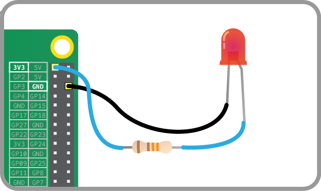

Lighting an LED
LEDs are delicate little things. If you put too much current through them they will pop (sometimes quite spectacularly). To limit the current going through the LED, you should always use a resistor in series with it.
Try connecting the long leg of an LED to the Pi's 3V3 and the short leg to a GND pin. The resistor can be anything over about 50Ω.

Image source: Raspberry Pi Foundation
The LED should light up. It will always be on, because it's connected to a 3V3 pin, which is itself always on.
Now try moving it from 3V3 to GPIO pin 17:

Image source: Raspberry Pi Foundation
The LED should now turn off, but now it's on a GPIO pin, and can therefore be controlled by code.